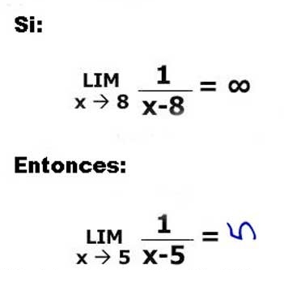

Inferred Formulae

Comparing the Artifacts
- FOF in FOF-to-CNF not very interesting
- CNF leaves (sometimes that's all you get)
- Smaller is often better
- Larger is sometimes useful
- Interesting for same FOF axioms
- CNF in proof
- Interesting only for same FOF axioms
- Subsets not interesting (see No Counting)
- Interesting for same CNF leaves
Comparing the Proofs
- Measure Jaccard distance between sets
(larger distance ≡ more different proofs)
- CNF leaf subset (same FOF axioms)
- Same FOF axioms, CNF leaf intersection
- Same FOF axioms, CNF set intersection (same CNF leaves)